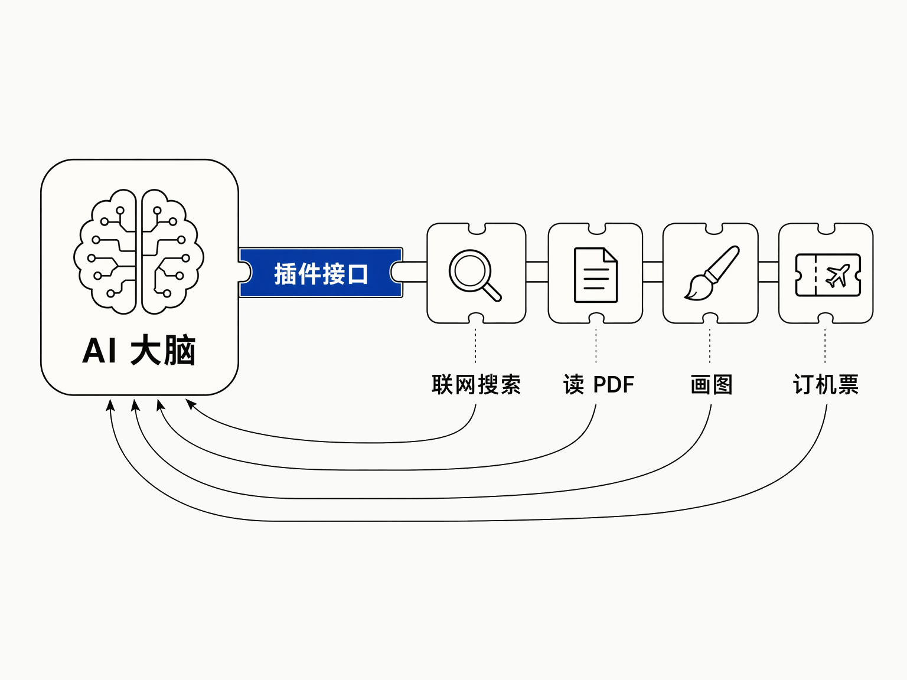
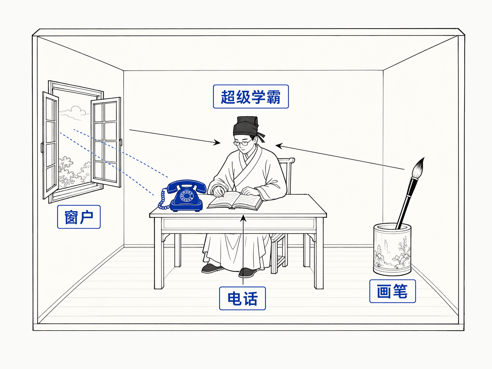
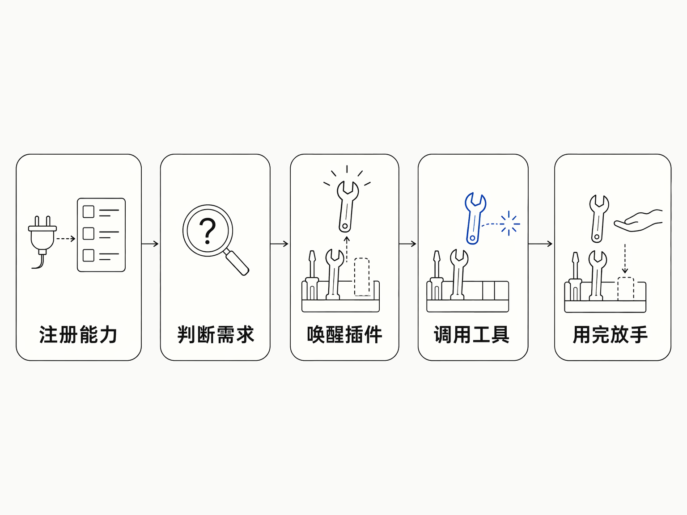
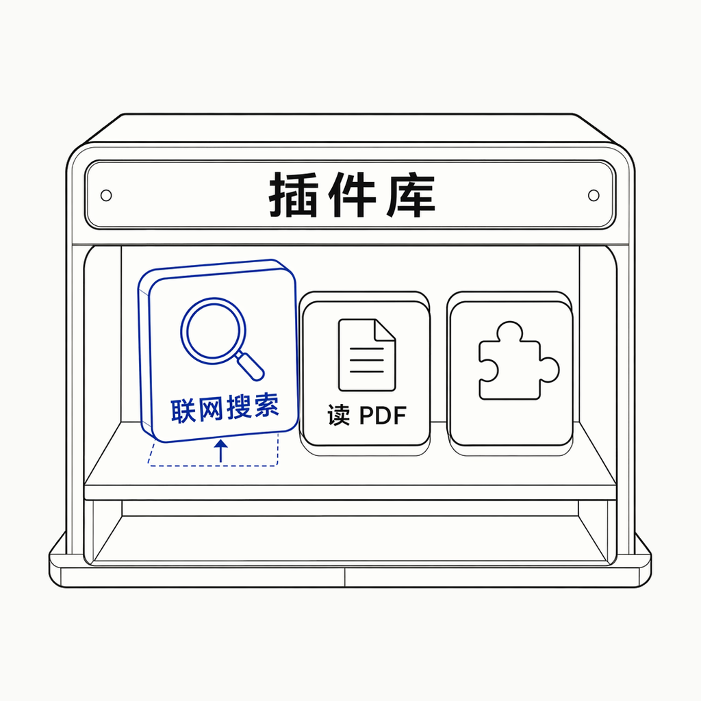

AI Knowledge · Beginner Series
Day 06
Indigo Porcelain
每天吃透一个
AI 知识点
Plugins
给 AI 装的外挂 App
为什么 AI 能聊天，却不能直接帮你订机票、查实时天气？
Plugins · 从能说到能做
AI Native · 006
Indigo Porcelain
Plugins
给 AI 装的外挂 App
为什么 AI 能聊天，却不能直接帮你订机票、查实时天气？
概念定义

插件是给 AI 安装的可拆卸"外挂 App"。模型本身没变，但通过统一的插件接口，AI 能按需接上联网搜索、读 PDF、画图、订机票等外部工具，把自己的能力边界向外推一大截。
打个比方

AI 原本像个关在书房里的超级学霸，满脑子知识却碰不到外面的世界。插件就是给它开了一扇窗（联网）、一部电话（调用服务）、一支画笔（图像生成）。学霸本身没变，能干的事瞬间多了几百倍。
握手协议

插件遵循一套固定的握手协议：每个插件先向 AI 注册自己擅长什么；AI 收到任务后判断需要哪个，按需唤醒它、调用工具拿到结果，然后立刻放手。不常驻、不占资源，所以非常高效。
规划成都 3 天行程
场景：让 AI 规划 5 月去成都的 3 天行程，预算 3000 块，顺便找出合适的机票和酒店链接。
逐个网站切换
多个插件协同
从能说到能做
"没有插件，AI 只能给你建议；有了插件，AI 可以直接帮你把事办了。"
它把 AI 从一个聊天玩具，变成了真正能嵌入工作流的数字助理。模型本身没有变，变的是 AI 能触及的外部世界——这恰恰是从"会聊"到"会做"的分水岭。
今天检查一件事

打开你常用的 AI 工具，去设置里找"插件"或"功能扩展"入口，挑一个感兴趣的插件，完成一个原本要切换好几个网站才能搞定的小任务。你属于哪一档？
从 A 到 C，只需要挑一个插件、办一件小事。